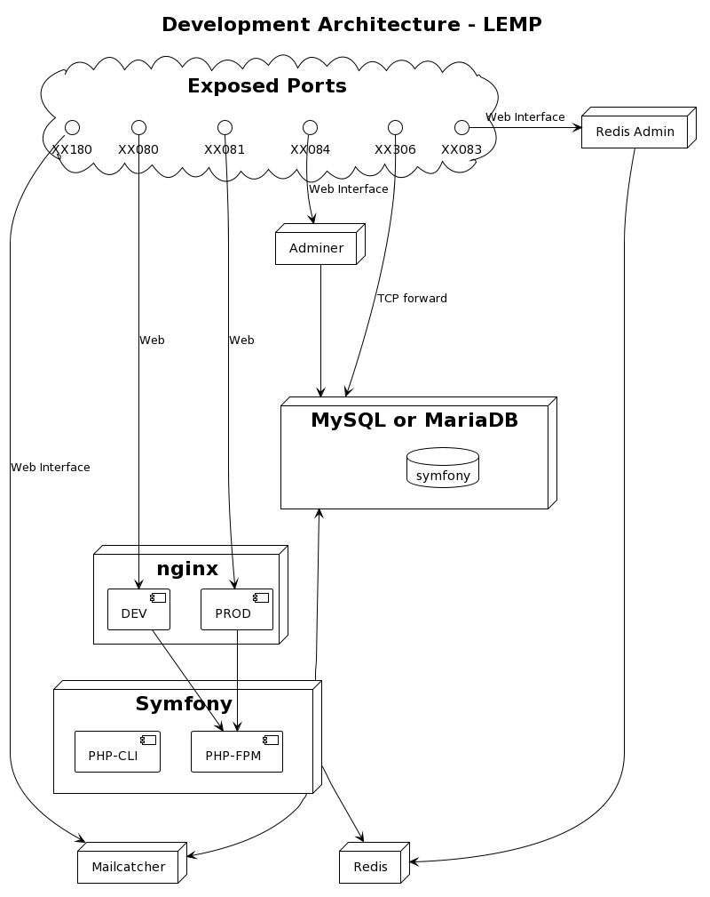

Symfony Launchpad
Symfony Launchpad is a CLI tool to start and maintain a Symfony project in less than 5 minutes on top of a full Docker stack.
It is based on eZ Launchpad created for eZ Platform / Ibexa installations.
You will end up with a full Docker stack where the source-code is on your host for you to start coding right away!
Installation
Requirements:
- PHP and PHP-CURL extension. PHP version 7.2+
- Docker 1.17+
- Docker Compose 1.16+
If you have curl installed:
$ curl -LSs https://upwind-media.github.io/symfony-launchpad/install.bash | bash
If you have wget installed:
$ wget -O - "https://upwind-media.github.io/symfony-launchpad/install.bash" | bash
Usage
When you have installed Symfony Launchpad (~/sf) you can start enjoying the feature.
Symfony Launchpad provides 2 main features:
- Initialization of a brand-new Symfony project (on top of Docker)
- Create the Docker Stack related to the current directory.
Initialization
That is the "from scratch" installation. You need to do that when you have nothing and you want to start a new project based on Symfony.
$ ~/sf init
From here Symfony Launchpad will ask you a bunch of question to configure your project.
Mac OS X users will have a wizard to set up NFS if needed.
At the end of the procedure those steps will be done for you:
- Configuration of your project locally.
- Download (pull) the correct image on your Docker Daemon.
- Set up a Symfony compliant docker-compose.yml.
- Create and start the containers required (depending of the choices you made).
- Install Composer in the Engine container (where PHP is executed in your stack).
- Install clean Symfony project through Composer inside the stack.
Once the Initialization is finished, the project is up, you can check doing:
$ ~/sf ps
You are now ready to dump the database and storage, git commit and push to share the project to your teams.
$ ~/sf dumpdata; git init; git add .; git commit -m "First Initial Commit"
$ git remote add origin https://gitorigin.com/xxx/xxxx-xxx.git; git push -u origin master
Create
In this context you have already a project somewhere, someone already did a ~/sf init
Then it most likely that you did
$ git clone https://SOMETHING.git
If you want to know if your project is Symfony Launchpad ready, you can just check the existance of .sflaunchpad.yml at the root directory of your project.
To create the local stack the command is then
$ ~/sf create
Here Symfony Launchpad will pull the images, create the containers of your stack as well as importing the database/storage.
Deployment
Symfony Launchpad can help you to deploy as well to Kubernetes. Even if it is optional and you can deploy the way you want we wanted to provide simplifications.
Setup
Kubernetes deployment is done via Helm. All chart files are configurable in kubernetes/dev/helm directory.
This is a basic Kubernetes cluster configuration needed for each Symfony Lauchpad installation:
$ cat .sflaunchpad.yml
kubernetes:
kubeconfig: (path to kubeconfig file)
registry:
name: (image registry URL where built images are pushed)
username: (registry login)
password: (registry password)
namespace: (cluster namespace where application should be deployed to)
Deploy
Once your local configuration is done, you can build image. Push to the registry and deploy using your previously configured Helm Chart.
~/sf k8s:build symfony
~/sf k8s:push symfony
~/sf k8s:deployStack
At any time you can get information on your stack by running
$ ~/sf info
Depending on the initialization, you might have more or less services, but here is the most common stack.
LEMP: Linux Nginx MySQL/MariaDB PHP-FPM
Common Commands
Symfony Launchpad was made to help you with a local Docker stack.
To do so, here are the commands available to you:
$ ~/sf
Usage:
command [options] [arguments]
Available commands:
help Displays help for a command
list Lists commands
self-update Self Update
docker
docker:build [build] Build all the services (or just one).
docker:clean [docker:down|clean|down] Clean all the services.
docker:comprun [comprun] Run Composer command in the symfony container.
docker:create [create] Create all the services.
docker:dumpdata [dumpdata] Dump Database and Storage.
docker:enter [enter|docker:exec|exec] Enter in a container.
docker:importdata [importdata] Import Database and Storage.
docker:initialize [docker:init|initialize|init] Initialize the project and all the services.
docker:logs [logs|log] Display the logs.
docker:sfrun [sfrun] Run a Symfony command in the symfony container.
docker:start [start] Start all the services (or just one).
docker:status [docker:ps|docker:info|ps|info] Obtaining the project information.
docker:stop [stop] Stop all the services (or just one).
docker:up [up] Up all the services (or just one).
docker:update Update to last images.
k8s
k8s:build Build new image for a given container.
k8s:deploy [deploy] Deploy application to Kubernetes using Helm Chart.
k8s:enter Enter in a container.
k8s:push [push] Push new image of a given container to the registry.
k8s:tunnel [tunnel] Forward port to/from selected pod.
When you want to provide extra arguments to a Symfony command, you have to wrap everything (command + arguments) inside quotes:
$ ~/sf sfrun "cache:clear --env=prod"
Global configuration
Because every project can share stuff and because you might want the same configuration everywhere, Symfony Launchpad reads a configuration file in your HOME directory as well as project directory.
This configuration file loading hierarchy is the following (next configuration file is overriding values from a previous one):
- ~/.sflaunchpad/sf.yml - home directory
- .sflaunchpad.yml - project directory
- .sflaunchpad.local.yml - project directory (shouldn't be stored in CVS repository)
provisioning:
folder_name: docker
project_folder_name: symfony
docker:
compose_filename: docker-compose.yml
network_name: default-sflaunchpad
network_prefix_port: 0
host_machine_mapping: ~
host_composer_cache_dir: ~
storage_dirs:
public_storage: symfony/public/storage
variables:
RUNNING_ENV: docker
CUSTOM_DOCKER_ENV: 1
context: ~
main_container: symfony
composer:
http_basic:
hostname:
host: www.hostname.com
login: login
password: pass
token:
github:
host: github.com
value: tokenvalue
kubernetes:
folder_name: kubernetes
kubeconfig: /Users/ubuntu/kubeconfig.yml
namespace: symfony
registry:
name: example.com/myregistry/symfony
username: user-token
password: user-token-passNote that this configuration is global and won't be included in the project (i.e. in the CVS repository). But it will be including in your local stack.
docker section is described in the next section.
macOS - Tips
When it comes to share a folder from the Host (your Mac) to containers, Docker for Mac is slow (at least for now).
There is a good improvement with new virtualization framework and VirtioFS, but not in all cases. Intel's versions of MacBooks
seem to be left behind in terms of file access performance, but there's built-in solution for Docker - Mutagen.
It can be easily installed as a Docker Extension - you can read more here.
After installing and configuring Mutagen extension all you need to do is add default docker context to be used within your stack.
# .sflaunchpad.local.yml
docker:
context: desktop-linux-mutagen
Store cache in the container
If you need even better performance, it can be optimized. The following is clearly a trick. But a trick that works pretty well!
Here is the magic, in your .sflauchpad.local.yml you have this line:
# .sflaunchpad.local.yml
docker:
variables:
APP_CACHE_DIR: /tmp/symfonycache/
APP_LOG_DIR: /tmp/symfonylog/
Enjoy!